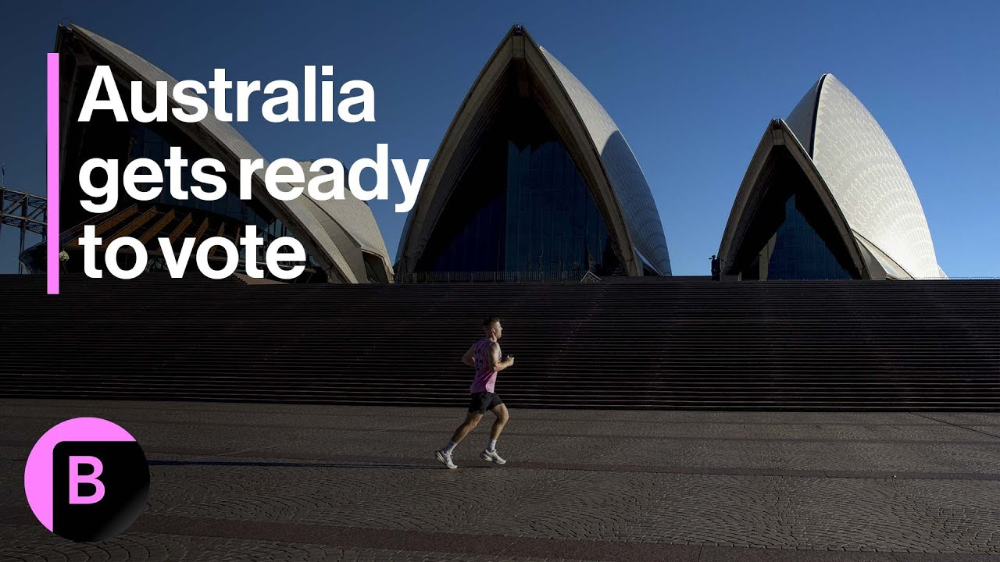

来B站一起耍【Global每日英语简报】
【澳大利亚全国大选倒计时】
Summary: Australia's Election Day is Saturday, with over 3 million early votes cast. The election hinges on cost of living and housing prices, while trade and foreign policy create challenges for leaders.
摘要： 澳大利亚大选本周六举行，已有超300万选民提前投票。选举围绕生活成本和房价问题展开，而贸易和外交政策给领导人带来挑战。

⏱️ Estimated Reading Time: 3 min
Saturday is Election Day in Australia and already more than 3 million of the country's 18 million voters have cast an early ballot.
本周六是澳大利亚的大选日，该国1800万选民中已有超过300万人提前投票。
For those still undecided, this election is boiling down to one key issue is anyone feeling that you're better off today than you were three years ago?
对于尚未决定的选民来说，这次选举归结为一个关键问题：你是否觉得现在比三年前过得更好？
Cost of living and the runaway real estate prices are top of the domestic agenda.
生活成本和飙升的房地产价格是国内议程的首要问题。
It's a battleground where both Opposition Leader Peter Dutton and Prime Minister Anthony Albanese seem comfortable.
这是反对党领袖彼得·达顿和总理安东尼·阿尔巴尼斯都显得游刃有余的战场。
Trade and foreign policy, though, have left both leaders squirming after President Trump imposed a shock 10% blanket tariff on all Australian imports.
然而，在特朗普总统对澳大利亚所有进口商品征收10%的全面关税后，贸易和外交政策让两位领导人都感到不安。
Dutton initially copied some Trump policies, including spending cuts styled on Elon Musk's so-called Department of Government efficiency and ending work from home for civil servants.
达顿最初效仿了特朗普的一些政策，包括以埃隆·马斯克所谓的“政府效率部门”为蓝本的支出削减，以及取消公务员居家办公。
He's since dumped those ideas and has been distancing himself from the US president.
此后他放弃了这些想法，并与美国总统保持距离。
We trust the United States, and I don't know the President.
我们信任美国，但我不认识总统。
I've not met him.
我从未见过他。
The Prime Minister obviously has been able to, but we all like to say you trust.
总理显然见过，但我们总喜欢说“信任”。
I don't know.
我不知道。
I don't know.
我不知道。
Donald Trump is my point.
唐纳德·特朗普是我的重点。
On the same debate stage, Albanese also swiftly moved on from the issue of trust and Trump.
在同一辩论舞台上，阿尔巴尼斯也迅速避开了信任和特朗普的问题。
I have no reason not to.
我没有理由不信任。
I've had a couple of discussions with him.
我和他进行过几次讨论。
Do you trust China's President Xi Jinping?
你信任中国国家主席习近平吗？
I have no reason not to.
我没有理由不信任。
Other China is our major trading partner.
另外，中国是我们的主要贸易伙伴。
One in four Australian jobs depends upon.
四分之一的澳大利亚工作岗位依赖于此。
Trade is in Australia's national interest to have a good economic relationship with China.
与中国保持良好的经济关系符合澳大利亚的国家利益。
Australia has already made a $500 million down payment to the United States under the August Defence Pact, which will see Australia receive nuclear submarines.
根据8月的防务协议，澳大利亚已向美国支付了5亿美元首付款，将获得核潜艇。
Neither major party wants to risk sinking that deal by alienating President Trump.
两大政党都不愿因疏远特朗普总统而破坏这笔交易。
Nor risk creating a fresh round of trade tension with China by getting too close to him.
也不愿因与他走得太近而引发新一轮对华贸易紧张。
Unlike the price of eggs, those issues are too fragile to be on the ballot this Saturday.
与鸡蛋价格不同，这些问题过于敏感，不会出现在本周六的选票上。
Paul Allen.
保罗·艾伦。
Bloomberg.
彭博社。
Sydney.
悉尼。